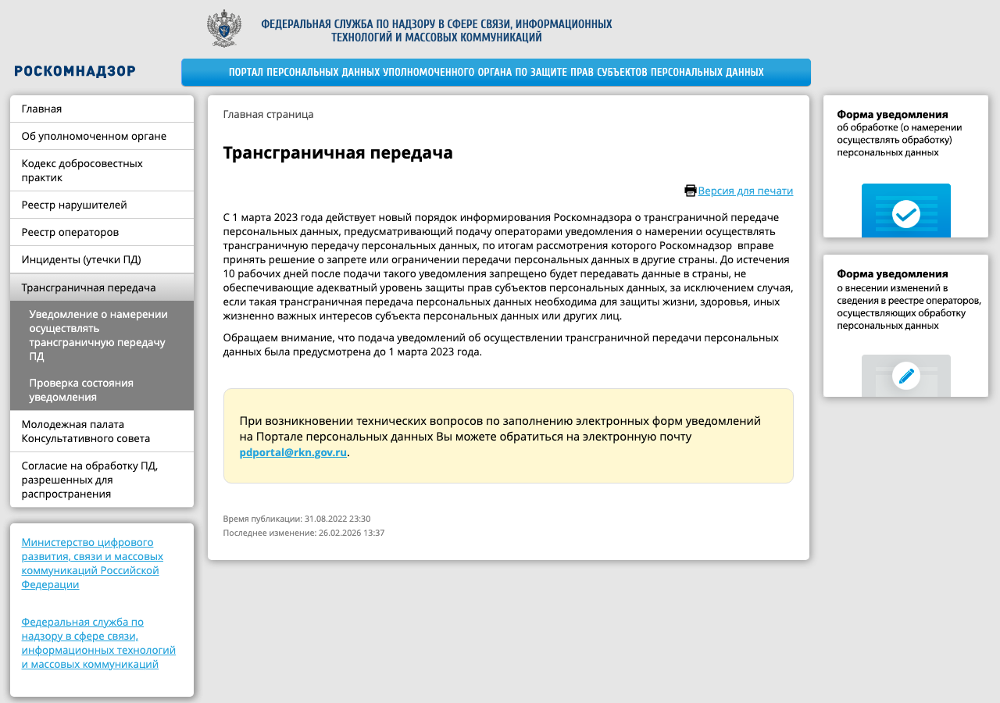

Бесплатный тариф зарубежного облака — самый дорогой тариф в этом справочнике: от 1 до 6 млн ₽ для организации.
Требование действует с 2015 года. Оно касается момента сбора: данные граждан России, которые приходят через форму, приложение или API, сначала записываются в базу на территории России. Исключения — пункты 2, 3, 4 и 8 ч. 1 ст. 6 — касаются международных договоров, правосудия, государственных услуг и журналистики; к обычному SaaS они не относятся.
Копия данных за рубежом допустима; основная база должна находиться в России. Схема «данные записываются в базу в России, затем часть передаётся иностранному сервису» локализации не нарушает, но включает трансграничную передачу, для которой действуют отдельные правила (§3).
Кроме штрафа, сайт оператора, нарушающего локализацию, может быть внесён в реестр нарушителей прав субъектов персональных данных и заблокирован (ст. 15.5 закона 149-ФЗ). Так в 2016 году был заблокирован LinkedIn.
| Архитектура | Локализация | Трансграничная передача |
|---|---|---|
| Сервер и база у российского хостинга или облака | соблюдена | нет |
| Приложение на зарубежной платформе, база у российского облака | соблюдена, если данные не записываются за рубежом до записи в России | есть, если данные проходят через зарубежные серверы и сохраняются там, например в журналах |
| База у зарубежного облака, копия в России | нарушена: первичная запись за рубежом | есть |
| База в России, письма через зарубежный сервис рассылок | соблюдена | есть: адреса почты и имена уходят за рубеж |
| База в России, тексты заявок в API зарубежной языковой модели | соблюдена | есть: если в тексте есть имена, телефоны, адреса |
| Иностранный счётчик аналитики на сайте | зависит от того, какие данные собирает счётчик | есть, если счётчик получает идентификаторы пользователей |
Для «КурсБлиновской» безопасная архитектура выглядит так: сервер приложения и база данных — у российского провайдера, резервные копии — там же, письма — через российский сервис рассылок, аналитика — российская. Если нужен иностранный сервис, в него передают только то, что нужно, и по возможности без персональных данных: например, текст заявки перед отправкой в языковую модель очищают от имени и телефона.
С 2024 года провайдеры хостинга обязаны уведомить Роскомнадзор и состоять в реестре провайдеров хостинга (ст. 10.2-1 закона 149-ФЗ); клиентов они обслуживают только после идентификации. Работа провайдера вне реестра — ч. 1 ст. 13.54 КоАП, для организации от 600 тыс. до 1 млн ₽. Выбирая российский хостинг или облако, проверяют провайдера в реестре. Если сам SaaS-сервис предоставляет клиентам вычислительные мощности для размещения их сайтов, он тоже может оказаться провайдером хостинга.
import re PHONE = re.compile(r"(\+7|8)[\s\-()]*\d{3}[\s\-()]*\d{3}[\s\-]*\d{2}[\s\-]*\d{2}") EMAIL = re.compile(r"[\w.+-]+@[\w-]+\.[\w.-]+") def strip_pd(text: str, names: list[str]) -> str: """Заменяет телефон, почту и известные имена заявителя на метки.""" text = PHONE.sub("[телефон]", text) text = EMAIL.sub("[почта]", text) for name in names: text = text.replace(name, "[имя]") return text
Такая замена снижает объём передаваемых данных, но не делает их обезличенными в строгом смысле: свободный текст заявки может содержать адрес, место работы, другие имена. Если без персональных данных задачу не решить, нужна трансграничная передача по правилам ст. 12 или российский сервис.
Трансграничная передача — передача персональных данных на территорию иностранного государства органу власти, иностранному физическому или юридическому лицу. С 1 марта 2023 года до её начала оператор подаёт в Роскомнадзор отдельное уведомление.

Отдельной части ст. 13.11 для передачи без уведомления нет. Такое нарушение квалифицируют как обработку в случаях, не предусмотренных законом (ч. 1 ст. 13.11), а Роскомнадзор вправе запретить передачу (ч. 7–12 ст. 12). Если за рубеж передаются незаконно полученные данные, это квалифицированный состав ст. 272.1 УК — ч. 4, до восьми лет лишения свободы.
Данные из форм — имена, телефоны, почта — попадают на зарубежные серверы в момент ввода, до записи в базу в России.
Отключить сервис или настроить маскирование полей ввода, подать уведомление о трансграничной передаче, обновить уведомление об обработке и политику.
ч. 5 ст. 18 — первичная запись в РФ13.11 ч. 8 — 1–6 млн ₽ч. 9 повторно — 6–18 млн ₽блокировка по ст. 15.5 149-ФЗст. 12 — уведомление до началаотдельно от уведомления ст. 22адекватные страны — сразуостальные — через 10 раб. днейбаза и копии — в РФиностранным сервисам — минимумочищать текст перед API